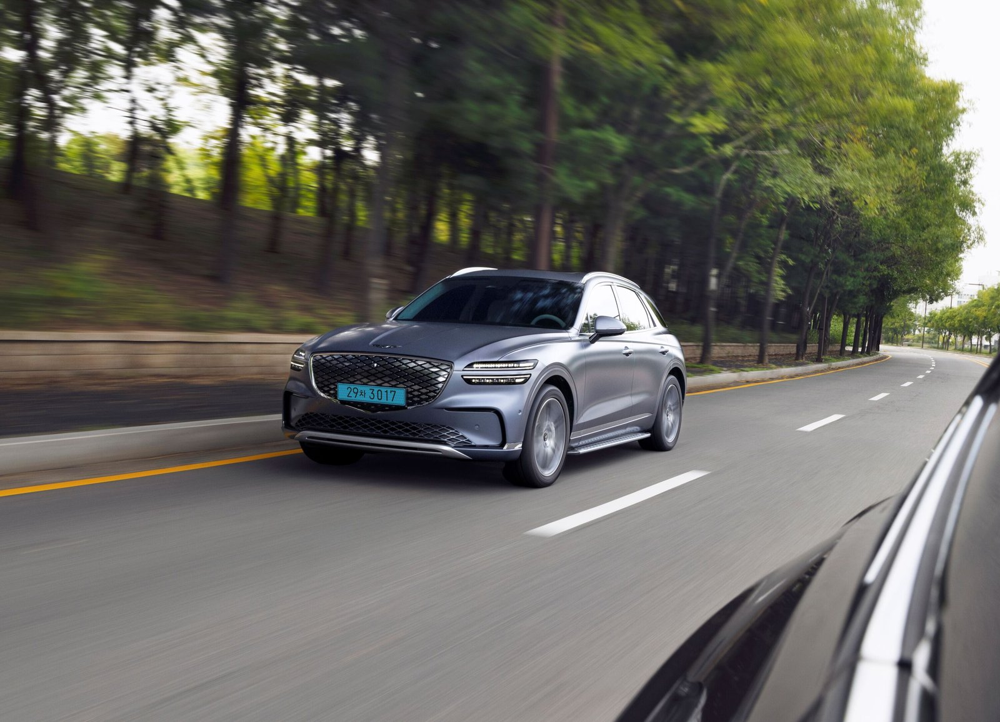
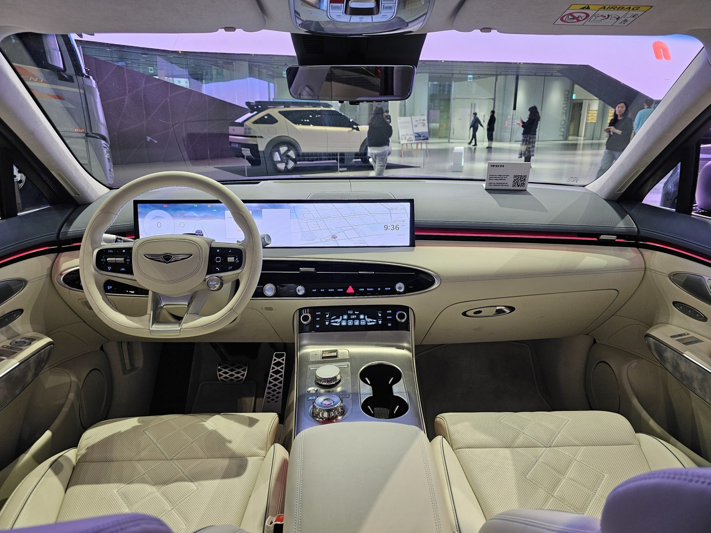
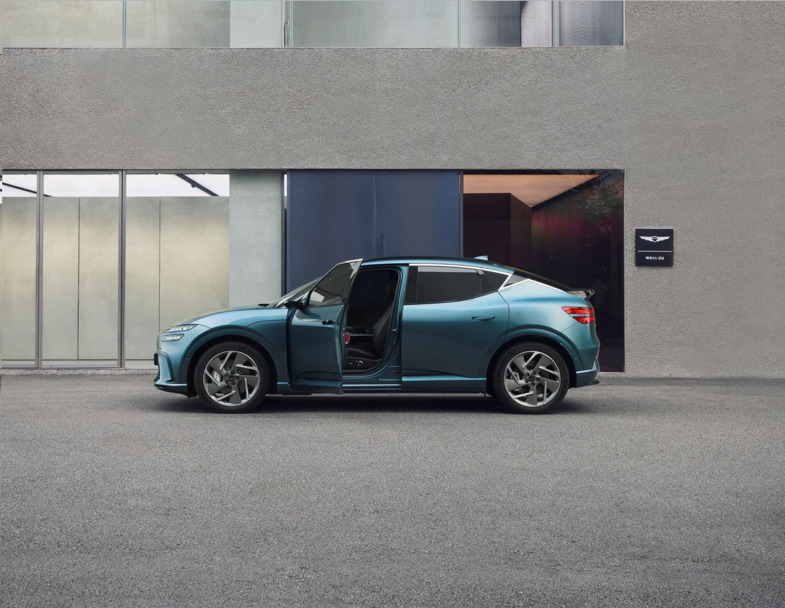

▲ 판매 가격을 동결하면서도 안전·편의 사양을 강화한 2027 GV60 ⓒ 제네시스 공식
제네시스가 지난 3월 19일(목) 럭셔리 전기 SUV 라인업의 연식변경 모델인 '2027 GV60'과 '2027 GV70 전동화 모델'을 동시에 출시하고 판매에 돌입했습니다. 두 모델 모두 완전변경이 아닌 상품성 강화형 연식변경으로, "고객 편의 사양을 강화하고 선택권을 확대했다"는 것이 제네시스 측 설명입니다.
가장 눈에 띄는 대목은 판매 가격 동결입니다. 원자재 및 부품 원가 상승 압력이 이어지는 상황에서도 GV60은 6,490만 원부터, GV70 전동화 모델은 7,580만 원부터로 기존 가격을 그대로 유지하면서 기본 사양만 확대하는 전략을 택했습니다.
1. 가격은 그대로, 안전·편의 사양만 끌어올렸다

▲ 에르고 모션 시트를 기본 적용한 2027 GV70 전동화 모델 ⓒ 제네시스 공식
2027 GV60에는 '페달 오조작 안전 보조' 기능이 기본 적용됐습니다. 정차 또는 저속 주행 중 전후방 1.5m 이내에 장애물이 감지된 상태에서 운전자가 가속 페달을 100% 밟으면, 차량이 스스로 토크를 제한해 급발진을 원천 차단하는 기능입니다. 최근 급발진 논란이 이어지는 상황에서 안전 사양을 기본화했다는 점이 특히 눈에 띕니다.
2027 GV70 전동화 모델은 운전자의 피로도를 줄여주는 에르고 모션 시트를 기본 사양으로 편입했습니다. 두 모델 모두 사고 발생 시 증거 영상 확보에 중요한 빌트인 캠 녹화 시간을 기존 약 20시간에서 120시간으로 대폭 늘려, 실사용자 관점의 안전 편의성을 강화했습니다.
2. 컬러·패키지 재편 — 선택권을 넓혔다

▲ 무드 조명과 매끈하게 이어진 통합 디스플레이가 인상적인 GV70 전동화 실내 ⓒ Damian B Oh, Wikimedia Commons (CC BY-SA 4.0)
GV70 전동화 모델은 신규 내장 색상 '오션웨이브 블루'·'하바나 브라운'과 역동적인 이미지를 강조한 신규 외장 색상 '트롬스 그린'을 추가했습니다. 패키지 구성도 전면 개편했는데, 기존 파퓰러 패키지Ⅰ·드라이빙 어시스턴스 패키지Ⅱ·2열 컴포트 패키지·빌트인 캠 패키지를 하나로 묶은 '파퓰러 패키지Ⅱ'를 새로 선보였고, 최고급 사양을 모은 '프레스티지 패키지'도 신설했습니다.
GV60은 반대로 기존 컨비니언스 패키지에서 2열 컴포트 패키지를 분리해 운영하기로 했습니다. 필요한 사양만 골라 담을 수 있도록 선택 폭을 넓힌 조치로, 실속 있는 구매를 원하는 소비자에게는 반가운 변화입니다. 실내는 전반적으로 아늑하게 감싸는 무드 조명과 하나로 매끈하게 이어진 디스플레이, 리얼 소재 디테일로 방해 요소를 걷어낸 몰입형 공간을 강조하고 있습니다.
3. 주행거리와 실내 공간 — 여전한 GV60·GV70의 강점

▲ 제네시스 특유의 정제된 디자인 언어를 이어가는 2027 GV60 ⓒ 제네시스 공식
GV70 전동화 모델의 1회 충전 주행거리는 트림과 배터리 사양에 따라 다르지만, 도심과 고속도로를 혼합한 조건에서 대략 400km 안팎을 주행할 수 있는 수준으로 알려졌습니다. 완전변경이 아니다 보니 파워트레인과 배터리 구성 자체는 기존과 동일하며, 이번 연식변경은 어디까지나 사용자 경험과 안전 사양에 초점을 맞췄습니다.
GV60과 GV70 전동화 모두 제네시스 특유의 정제된 실내 디자인과 고급 소재 마감을 유지하면서, 자율주행 보조와 커넥티비티 기능을 다듬는 방향으로 상품성을 다졌다는 평가가 나옵니다.
4. 종합 평가 — 완전변경은 아니지만, 실속은 챙겼다
제네시스는 이번 판매 개시를 기념해 '#전기차도제네시스답게' 해시태그로 시승 후기를 남기면 우수 작성자에게 호텔 숙박권이나 뱅앤올룹슨 스피커를 증정하는 이벤트도 함께 진행하고 있습니다. 신차 효과를 노리기보다는 기존 오너와 신규 구매자 모두를 겨냥한 신뢰 다지기 전략으로 풀이됩니다.
화려한 풀체인지급 변화를 기대했다면 다소 심심할 수 있지만, 가격은 그대로 두고 급발진 방지 기능과 빌트인 캠, 시트 편의 사양까지 기본화한 점은 실사용자 입장에서 분명한 호재입니다. GV60·GV70 전동화 모델을 저울질하던 소비자라면 이번 연식변경이 구매를 결정짓는 좋은 계기가 될 전망입니다.